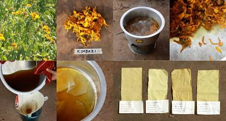
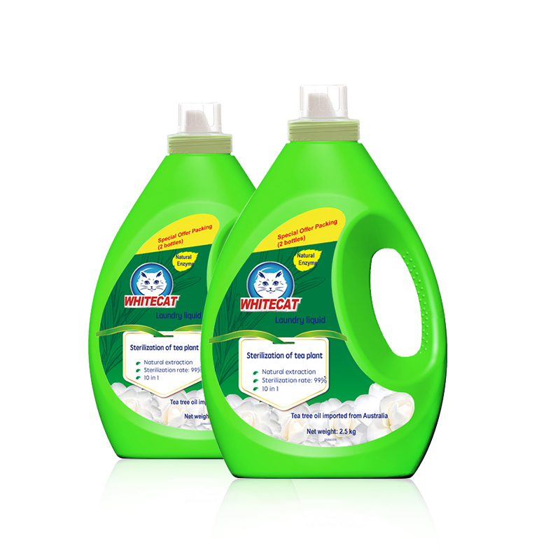
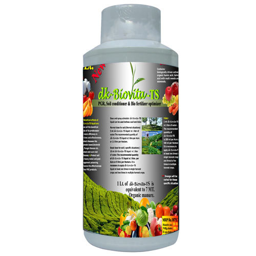
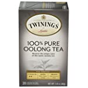
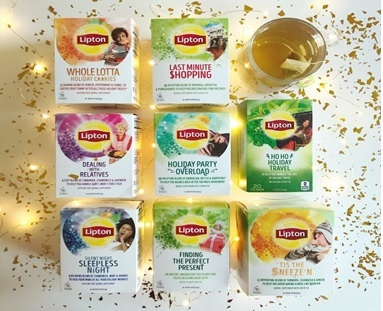

Wood, silk or synthetic yarn type fibres are dyed in tea extract solution (1:20) containing 10% of tea extract powder with met-mordant at 60°C for six hours. After washing, the dyed yarn with water, the yarn weight increased by 3-5%. By metal-mordants, the colour of yarn changes to pale green, yellow-green, yellow, brown and copper-yellow. It is found that despite repeated washing or exposure to sunlight for the fading test, the colour of yarn is maintained at least for one year.

USE AS DETERGENT
Oolong tea extract has been developed as one of the effective substitutes for (CFC) chlorofluoro carbon used to wash away oil on chips used in display coated liquid crystal. The advantages of oolong tea extract as detergent are;
It is an organic material and therefore ecofriendly and the waste water is easily disposed of.
It is a safe detergent which is non toxic and non-inflammable.
The extract forms a high quality detergent for washing oily substances.

TEA SEED OIL
Tea seeds are used as a source of supplementary protein and edible oil for human consumption, apart from many other industrial applications. The prospects of tea seed oil are immense. It can be a substitute for any edible oil; it can also be used as a cheaper alternative to olive oil which is mostly imported. Cosmetic industry may use it for manufacturing hair lotion, soap, etc. The thiosaponin has some medicinal value. It acts as an adjuvant, anti-inflammatory agent.
Bio-Manure
Tea oil cake and waste are used as fodder and bio-manuring. Manure produced from a mixture of green tea waste and fowl dropping is sold in the Japanese manure market and is used widely in kitchen gardens for flowers and vegetables.

Have You Tried Our Tea
While there are literally thousands of teas in the world,here are some of our popular types of tea
English Breakfast Tea
English breakfast tea or simply breakfast tea is a traditional blend of black teas originating from Assam, Ceylon and Kenya.
Mint Herbal Tea
Mint tea is a herbal tea made by infusing mint leaves in hot water.
Black Tea
Black tea, also translated to red tea in various East Asian languages, is a type of tea that is more oxidized than oolong, yellow, white and green teas.
Popular Tea Brands We Sell
Twinings tea
Twinings tea is one of the oldest tea brands, worldwide. It is one of the best luxury tea brands that was founded in England by Thomas Twining in 1706.

Yorkshire tea
It is one of the most popular traditional tea brands founded by Betty's & Tyler's group in England.
Lipton tea
Lipton tea brand was founded by Thomas Lipton in 1871. He started with a small grocery store and currently is one of the world's top 10 tea brands.
